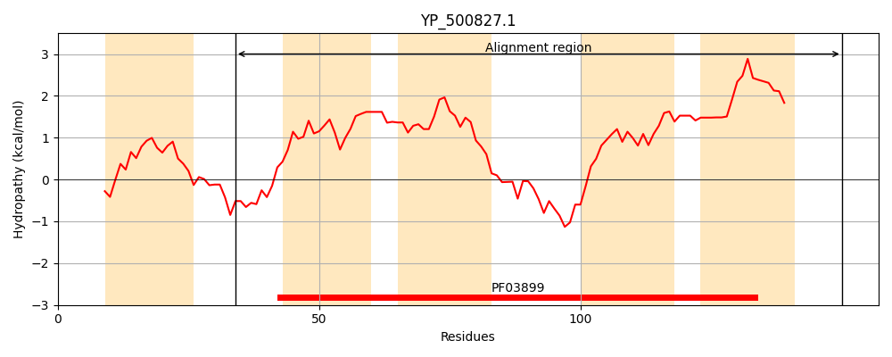
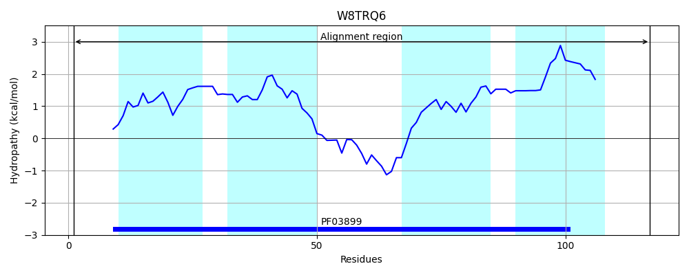
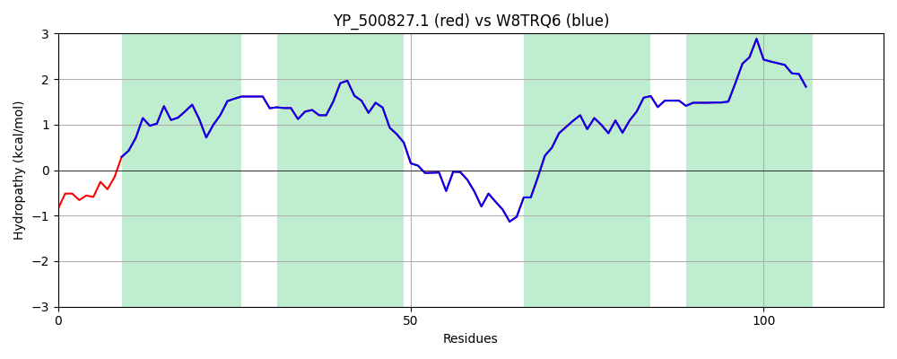

Hit Accession: W8TRQ6
Hit TCID: 1.A.77.3.20
Hit Description: gnl|BL_ORD_ID|20694 gnl|TC-DB|W8TRQ6|1.A.77.3.20 ATP synthase OS=Staphylococcus aureus GN=AA961_10650 PE=4 SV=1
Mach Len: 117
e:0.000000
Query TMS Count : 5
Hit TMS Count: 4
TMS-Overlap Score: 3.750000
Predicted Substrates:CHEBI:3473;cation
BLAST Alignment:
| Protein Hydropathy Plots: | |
|---|---|
|  |  |
Pairwise Alignment-Hydropathy Plot: | |
|  | |